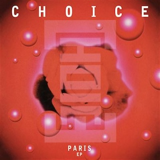
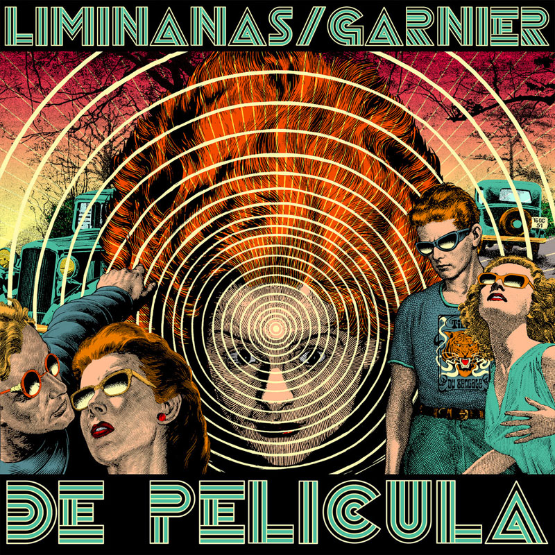

Suivront Mille Ans De Calme (bande originale du ballet d'Angelin Preljocaj) (2010)
Home Box (2015)
De Película (avec The Limiñanas) (2021)
33 tours et puis s'en vont (2023)
FOCUS ALBUM
Shot in the Dark (1994)
Shot in the Dark est le premier album de Laurent Garnier, sorti en 1994 sur
F Communications.
Premier album de Laurent Garnier, Shot in the Dark pose les bases de son univers. Entre l’héritage de la techno de Detroit et l’énergie de la house de Chicago, le disque déploie un son sombre, tendu et hypnotique. On y entend déjà le DJ qui fait vibrer les clubs et l’artiste qui cherche à aller plus loin que le simple dancefloor.
FOCUS EP

Choice – Paris EP (1993)
Sorti en 1993 sous le nom Choice, cet EP doit sa réputation à « Acid Eiffel ».
Le morceau est construit comme une lente ascension, avec des nappes planantes et une ligne acid entêtante qui monte sans jamais exploser.
Il est devenu un véritable classique de la techno française, encore joué et admiré aujourd’hui.
FOCUS COLLAB

De Película avec The Limiñanas (2021)
En 2021, Laurent Garnier s’associe au duo perpignanais The Limiñanas pour De Película. Pensé comme la bande-son d’un film imaginaire, l’album raconte une fuite à deux à la manière d’un road-movie. Le rock garage psychédélique du groupe et les pulsations électroniques de Garnier s’y rencontrent de façon aussi inattendue que réussie.
FOCUS LIVE
It's Just Musik - Live à Pleyel - PIAS - 2011 (DVD)
En 2011, Laurent Garnier se produit à la Salle Pleyel, à Paris. Ce concert compte parmi ses projets qui sortent du cadre
des clubs et des festivals électroniques, au même titre que ses prestations au Louvre, au Pont du Gard ou à Jazz à Vienne.
Voir la techno investir l’une des grandes salles historiques de la musique classique a valeur de symbole.
Cette soirée montre que la musique électronique a gagné sa place parmi les musiques savantes,
et que Garnier sait aussi bien faire danser un club qu’émouvoir une salle de concert assise.